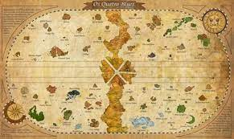

One Piece населена как людьми, так и другими разумными расами, как: скайпийцы, русалки, рыболюди и великаны. В морях обитают различные крупные морские звери, именуемые властелинами морей. В этом мире существует только один суперконтинент Ред-Лайн, который опоясывает планету. Перпендикулярно Ред-Лайн идёт океаническое течение Гранд-Лайн, которое также опоясывает земной шар. Ред-Лайн и Гранд-Лайн делят мировой океан на четыре: Ист-Блу — восточный океан, Вест-Блу — западный океан, Норд-Блу — северный океан и Саут-Блу — южный океан. Гранд-Лайн находится между двумя поясами, отделяющими Гранд-Лайн от четырёх океанов, которые называются Калм-Белт. На Калм-Белте практически всегда полный штиль и полное отсутствие морских течений, а также много властелинов морей, и поэтому наиболее простой и безопасный способ попасть на Гранд-Лайн — через одно из четырёх течений на горе Реверс-Маунтин добраться до вершины горы, а потом спуститься с горы по пятому течению, ведущему прямиком на Гранд-Лайн. Гранд-Лайн отличается непредсказуемым климатом. Из-за разницы климатических зон на этом течении существует четыре основных типа островов по климатическим условиям: летние, весенние, осенние и зимние. Так как на Гранд-Лайн полно магнитных аномалий, обычный компас непригоден для навигации по этому течению. Для этого существует специальный компас лог-пос, который при пребывании в течение некоторого времени на одном из островов Гранд-Лайн настраивается на магнитное поле следующего. Вторая половина Гранд-Лайн, начинающаяся после пересечения его с Ред-Лайн, называется «Новым светом» и отличается более суровым климатом, чем первая половина. Те, кто побывал в Новом свете, окрестили первую половину Гранд-Лайн «Раем» по сравнению с ним. Технологический прогресс в этом мире схож с Европой XVII века, однако некие аналоги современных технологий в нём присутствуют. Например, функцию передатчиков выполняют улиткофоны, животные, похожие на улиток, которые при присоединении к электрическому оборудованию способны выполнять функцию телефона, факса, камеры и прочих устройств подобного рода. На небесном острове Скайпия водятся животные, раковины которых могут сохранять звук, ветер, изображения или примененную к ним механическую силу. Такие раковины используются в различных механизмах. В мире One Piece находится в обращении денежная единица под названием «белли». На Скайпии существует другая денежная единица под названием «экстолы». 1 белли равен 10 000 экстолам.
Мировые силы
Почти весь мир One Piece контролирует Мировое правительство, которое является основным антагонистом в сериале . У Мирового правительства много врагов, одним из главнейших является Революционная армия, которая борется против него и уже совершила перевороты в нескольких государствах. Океаны контролируются тремя основными силами: Морским дозором, семью Великими Корсарами и четырьмя Императорами морей, причём первые две силы подвластны Мировому правительству.
Морской дозор-это основная военная сила Мирового правительства, по борьбе с её врагами, преступниками и пиратами. Дозорных можно встретить по всем океанам, но подавляющее их большинство находится на Гранд-Лайн, где находятся наиболее сильные пираты.
Семь великих корсаров-(Семь морских полководцев при правителе) — это семеро сильных пиратов, принятых на службу Мировому правительствову, для поддержания баланса между пиратами и морским дозором. В обмен на сотрудничество и неприкосновенность со стороны дозорных, Великие корсары должны отдавать одну десятую часть добычи Мировому правительству, а также нападать только на пиратов. Другие пираты их презирают и называют «шавками правительства». Фактически Великие корсары являются каперами Мирового правительства и действуют в основном на Гранд-Лайн.
Четыре Императора Морей-(или же ёнко)это четверо сильнейших пиратских капитанов, каждый со своей флотилией, которые правят на территории Нового света. Императоры морей не находятся в союзе между собой
Дьявольский плод — это плод, дающий съевшему его какую-либо сверхъестественную способность. Их называют «сокровищем моря» и считают «воплощением морского дьявола». Формы и расцветки Дьявольских плодов многообразны, но на любом плоде присутствует характерный узор из завитков, который с первого взгляда позволяет отличить их от обычных плодов. У каждого Дьявольского плода есть своя собственная уникальная способность, и каждый вид существует в единичном экземпляре. Дьявольские плоды считаются редкостью и высоко ценятся: даже плоды, эффект которых неизвестен, оцениваются не менее, чем в 100,000,000 белли. По словам Эйитиро Оды, всего их существует более сотни. На вкус плоды противны, но, чтобы получить их способность, необязательно есть плод целиком, однако, если один кусок плода был съеден, остальная его часть теряет свою силу. Один человек может съесть только один плод, попытка съесть второй плод приведёт к смерти. После смерти владельца плод возникает снова, и его может съесть другой. Кроме того, съевшие плод не могут плавать — при погружении в воду они камнем уходят на дно, так как «море их ненавидит», также существует особый минерал «морской камень», который нейтрализует силы Дьявольских плодов, зачастую им облицовывают оружие и тюрьмы. «Движущаяся вода», к примеру, дождь, не влияет на силу съевших плод. Выделяют три типа Дьявольских плодов:
Парамеция-«сверхчеловеческий тип», наиболее распространённые среди Дьявольских плодов. Дают самые разные способности, к примеру, растягивать своё тело или создавать взрывные волны.
Зоан-«животный тип», позволяет превращаться в какое-либо животное. На данный момент известно 3 подвида Зоана — «мифический», позволяющий превращаться в мифическое существо, к примеру, в феникса или в Будду, «доисторический», позволяющий превращаться в древнее животное (к примеру, в динозавра), и "смайл", искусственный Зоан, отличающийся по виду от других плодов, но дающий все способности обычных Зоанов, а возможность его массового производства позволяет быстро собрать армию из носителей способностей дьявольских фруктов типа зоан.
Логия-«стихийный тип», который считается наиболее редким и мощным типом Дьявольских плодов. Позволяет своему обладателю превращать своё тело в какую-либо стихию или вещество, к примеру, в огонь, песок или молнию, и управлять ими, за счёт чего съевшие такой плод почти неуязвимы. Тем не менее, у многих Логий есть свои слабые места, например, молния нейтрализуется резиной, а песок нейтрализуется водой.
Воля наблюдения-воля, позволяющая предвидеть намеренные действия противников и чувствовать их присутствие. На небесном острове Скайпия известна как «мантра».
Воля вооружения-воля, покрывающая тело пользователя невидимой бронёй. Кроме того, если использовать её во время удара или пропустить через оружие, то можно во много раз увеличить его силу. Используя Защитную Волю, можно нанести урон даже съевшему Дьявольский плод типа Логия.
Королевская Воля- эта воля позволяет лишать сознания противников со слабой волей одним лишь взглядом. В 1010 главе манги стало известно, что Королевской Волей можно покрыть тело и наносить удары не касаясь самой цели и игнорировать прочность тела. Королевской воли нельзя научиться, так как это врождённая способность, и она присутствует только у одного из миллиона человек.
История
Сюжет сериала начинается с казни Короля пиратов Гол Д. Роджера, сумевшего получить богатство, славу и власть. Когда ему дают право последнего слова, он объявляет, что спрятал своё главное сокровище «Ван-Пис» в неком месте, и призывает всех его найти. После казни Короля пиратов многие смельчаки отправляются на Гранд-Лайн, на поиски Ван-Писа. Так начинается массовый разгул пиратства, названный Великой эрой пиратов. Через несколько лет после казни мальчик по имени Манки Д. Луффи знакомится со знаменитым пиратом - Рыжим Шанксом. Случайно съев Дьявольский плод Резина-Резина (яп. ゴムゴムの実 гому гому но ми), Луффи чуть не погибает в море, но Шанкс спасает его ценой своей руки. Затем, когда Шанкс со своей командой отплывает из города, Луффи обещает ему найти Ван-Пис и стать Королём пиратов. Шанкс отдаёт Луффи свою соломенную шляпу и берёт с него обещание: когда Луффи станет Королём пиратов, тогда то её вернёт. Спустя 10 лет Луффи отправляется в плавание по океану Ист-Блу, чтобы собрать команду, которая позже станет известна, как «Пираты Соломенной шляпы». В начале путешествия Луффи спасает от пиратки Альвиды мальчика по имени Коби, который мечтает служить в Морском Дозоре. Одолев жестокого дозорного капитана Моргана и его трусливого сына Хельмеппо, Луффи вдохновляет Коби устроиться на службу в Дозор, и знакомится с печально известным охотником на пиратов, мастером меча Ророноа Зоро, который и становится первым членом его команды. Затем, победив пиратскую шайку Клоуна Багги, команда Луффи обретает штурмана в лице Нами. Через некоторое время команда Соломенной шляпы срывает жестокий и хитроумный план капитана Куро, после чего к команде присоединяется канонир Усопп, а затем защищает ресторан Барати от Дона Крига, получив в качестве кока Санджи. Сразу же после победы над Доном Кригом Нами угоняет корабль Луффи «Гоинг Мерри». Выясняется, что она ограбила команду Луффи, чтобы получить деньги на выкуп своей деревни у рыболюдей, возглавляемых Арлонгом и терроризирующих её жителей. В итоге Луффи, Зоро, Санджи и Усопп одолевают Арлонга и его шайку, и Нами возвращается в команду. Сразу после победы над Арлонгом Луффи впервые получает за свою голову крупную награду и становится известным. Воссоединившись, Пираты Соломенной шляпы держат курс на гору Реверс-Маунтин, так как это единственный способ перейти на течение Гранд-Лайн, где, по слухам, Голд Роджер и спрятал сокровище Ван-Пис. По пути Луффи заплывает в порт города Логтаун, где когда-то и родился, и был казнён Король пиратов. Луффи чуть не убивают Багги и Альвида, желающие отомстить ему за их поражения, а затем его едва не ловит капитан дозорных Смокер, но Луффи спасает загадочный мужчина в плаще по имени Дракон. Друзья бегут из Логтауна и отправляются на Гранд-Лайн. На Гранд-Лайн к пиратам присоединяется принцесса Нефертари Виви, чьё королевство Алабаста, расположенное на Песчаном острове, находится в состоянии гражданской войны. Виви выяснила, что за всем этим стоит тайная организация «Барок Воркс», возглавляемая одним из семи Великих корсаров — Крокодайлом, и герои решают ей помочь. По пятам за героями следуют агенты «Барок Воркс», а герои направляются в Алабасту. По пути Нами заболевает, и команде приходится пришвартоваться у заснеженного Барабанного королевства, где после победы над деспотичным Ваполом к команде присоединяется говорящий олень Тони Тони Чоппер, исполняющий на корабле обязанности судового врача. В этот момент впервые становится известно, что истинное имя Голд Роджера — Гол Д. Роджер: в его имени есть тот же инициал Д., что и у Манки Д. Луффи, также впервые упоминается «Воля Д.». Прибыв в Алабасту, герои встречают Портгаса Д. Эйса, приёмного старшего брата Луффи. Эйс рассказывает Луффи, что стал капитаном второго отряда пиратов Белоуса , одного из самых сильных пиратов в мире, а затем упоминает, что преследует Чёрную Бороду, своего бывшего подчинённого, убившего своего соратника. После этого пути Луффи и Эйса расходятся. Пираты Соломенной шляпы останавливают войну, когда Луффи побеждает Крокодайла. Виви остаётся в Алабасте, в то время как Луффи с друзьями продолжают свой путь по Гранд-Лайн. Чуть позже к ним присоединяется Нико Робин, девушка-археолог и бывший член «Барок Воркс», способная читать надписи на загадочных древних камнях-понеглифах. Продвигаясь дальше, Луффи знакомится с пиратом Маршаллом Д. Тичем, который, как и Луффи, мечтает стать Королём пиратов. Затем Луффи с друзьями отправляются на небесный остров Скайпия, на котором идёт война между двумя народами: скайпийцами и шандийцами. Друзья оказываются втянуты в эту войну, что приводит к их конфликту с правителем острова, «богом» Энелем. Луффи побеждает Энеля, тем самым спасая Скайпию и положив конец войне. Вскоре после приключений на острове Скайпия команда сталкивается с адмиралом дозорных Аокидзи, который рассказывает команде, что знания Робин о понеглифах не выгодны Мировому правительству: в надписях на понеглифах содержатся доказательства о том, что Мировое правительство пришло к власти сомнительным путём. Некогда существовало двадцать королевств, уничтоживших древнее королевство, и позже, во времена Пустого века, историю которого запрещено изучать, они объединились в Мировое правительство. Понеглифы — всё, что осталось от древнего королевства. Луффи отказывается выдавать её Мировому правительству и пытается сразиться с Аокидзи, но тот оказывается слишком силён, и Пиратам Соломенной шляпы приходится спасаться бегством. Команда доплывает до судостроительной верфи Уотер-Севен, где они вступают в конфликт с бандой киборга Фрэнки. Однако неожиданно тайная полиция Мирового правительства CP-9, самым сильным из членов которой является агент Роб Луччи, захватывает Робин в плен и везёт её в цитадель на острове Эниес-Лобби. Пираты Соломенной шляпы, желая спасти Робин, объявляют войну Мировому правительству. В результате долгих битв с CP-9 друзья спасают Робин, а впоследствии к ним присоединяется Фрэнки в качестве корабельного плотника. В процессе полностью уничтожен корабль «Гоинг Мерри», однако Фрэнки строит корабль «Таузенд Санни», намного превосходящий «Гоинг Мерри», который и становится кораблём Пиратов Соломенной шляпы. Герои попадают на гигантский корабль «Триллер Барк», где капитаном является Гекко Мория, один из семи Великих корсаров, способный с помощью сил своего Дьявольского плода оживлять зомби посредством похищенных теней живых существ. Команда Соломенной шляпы побеждает Морию и возвращают тень скелету по имени Брук, который отныне становится музыкантом в их команде. Пираты почти добираются до Ред-Лайн, соответственно, пройдя первую половину Гранд-Лайн. В Новый свет из первой половины Гранд-Лайн можно попасть, только проплыв под континентом Ред-Лайн, чтобы это сделать, корабль требуется покрыть пузырём из специальной смолы, который можно добыть на архипелаге Сабаоди. На Сабаоди герои знакомятся с Сильверсом Рейли, бывшим первым помощником в команде Гол Д. Роджера. Рейли рассказывает, что Роджер сам сдался дозорным, поскольку был неизлечимо болен ещё за три года до своей казни, и умер бы в любом случае. Выясняется, что среди четырёх сильнейших пиратов, правящих Новым светом, «Императоров морей», также есть Шанкс, который когда-то вдохновил Луффи на путешествие, в молодости вместе с Багги бывший юнгой у Роджера. На Сабаоди друзья сталкиваются с Великим корсаром Бартоломью Кумой, который побеждает всю команду и с помощью своих способностей перемещает каждого её члена на различные острова, находящееся на Гранд-Лайн. Луффи оказывается на острове Амазон-Лили, где живут только женщины во главе с Великим корсаром Боа Хэнкок, ненавидящей мужчин. Однако, неожиданно для всех, Хэнкок влюбляется в Луффи и решает ему помочь. Луффи становится известно, что его приёмного старшего брата Портгаса Д. Эйса захватил Чёрная Борода, оказавшийся Маршаллом Д. Тичем, и выдал Морскому Дозору, и что скоро Эйса казнят. Также становится известно, что один из Императоров морей, Эдвард Ньюгейт по прозвищу - Белоус, решает собрать всю свою флотилию и спасти члена своей команды Эйса из рук дозорных. Хэнкок помогает Луффи пробраться в тюрьму Импел-Даун, где держат Эйса, но Луффи опаздывает, так как Эйса увезли на публичную казнь в Штаб-квартиру Морского дозора. Луффи освобождает многих пиратов из тюрьмы, в том числе Багги, Крокодайла и рыбочеловека Дзинбэ, которые становятся его союзниками, а затем отправляется в Штаб-квартиру Морского дозора. Одновременно Белая Борода и его флотилия также добираются до Штаб-квартиры, и начинается битва. Главнокомандующий дозорных Сэнгоку объявляет, что отец Эйса — Гол Д. Роджер, отец Луффи — Манки Д. Дракон, возглавляющий Революционную армию и ведущий активную борьбу против Мирового правительства, один из самых разыскиваемых преступников в мире, а дед — Манки Д. Гарп, один из самых сильных дозорных, вице-адмирал, некогда преследовавший и сражавшийся на равных с самим Гол Д. Роджером и ставший приёмным дедом Эйса по его просьбе. Луффи освобождает Эйса, но тут Эйса убивает адмирал Акаину, из-за чего Луффи впадает в отчаяние. Белую Бороду убивает команда Чёрной Бороды, перед смертью Белая Борода объявляет, что Ван-Пис действительно существует, и что тот, кто его найдёт, «перевернёт этот мир». Чёрная Борода неведомым способом забирает силу Дьявольского плода Белой Бороды, таким образом, получив вторую способность Дьявольского плода. Кровопролитие останавливает Шанкс, оказавшийся здесь со своей командой. Какое-то время Луффи тяжело переживает потерю Эйса и даже хочет отказаться от мечты стать Королём пиратов, считая себя слишком слабым, но Дзинбэ помогает ему вновь обрести надежду. После того, как Луффи оправляется от утраты Эйса, Рейли советует ему и его команде потренироваться два года, прежде чем отправляться в Новый свет. Луффи подаёт знак своей команде, и те начинают тренировку (Луффи тренируется под руководством Рейли, остальные на островах, куда их отправил Кума). Через два года команда Соломенной шляпы воссоединяется на архипелаге Сабаоди, и встречаются на «Таузенд Санни», который охранял Бартоломью Кума, который, как выясняется, тайно помогал Луффи, и в обмен на возможность помощи Луффи его роботизировал и лишил собственной воли доктор Вегапанк. Герои покрывают корабль пузырём и отправляются под Ред-Лайн, через остров Рыболюдей. На острове Рыболюдей пытается устроить государственный переворот рыбочеловек по имени Ходи Джонс, фанатично преданный идеям Арлонга о том, что люди — низшие создания по сравнению с рыболюдьми. Друзья встречают Дзинбэ, который, как выясняется, виноват в том, что Арлонг терроризировал деревню Нами. Выслушав Дзинбэ, Нами прощает его. Становится известно, что принцесса русалок Сирахоси, с которой подружился Луффи, способна повелевать властелинами морей и, таким образом, является Посейдоном — одним из трёх легендарных оружий, способных уничтожить мир. Луффи спасает Сирахоси и Остров Рыболюдей от Джонса, обратив на себя внимания Большой Мамочки, одной из Императоров морей, а затем предлагает Дзинбэю вступить к нему в команду, но Дзинбэй отвечает, что сделает это позже. Прибыв в Новый свет, друзья оказываются на острове Панк-Хазард, одна половина которого заморожена, а другая — пылает огнём. Здесь некогда сразились за пост главнокомандующего дозорных адмиралы Аокидзи и Акаину, обладающие благодаря Дьявольским плодам способностями льда и магмы соответственно, в результате чего Аокидзи покинул Дозор, а Акаину заменил Сэнгоку и стал его лидером. На острове герои встречают Трафальгара Ло, ставшего одним из Великих корсаров. Ло заключает союз с командой Луффи против Кайдо, одного из Императоров морей. Объединившись, они побеждают (а впоследствии забирают с собой ради шантажа Донкихота Дофламинго) Цезарь Клоуна, который разрабатывал оружие массового уничтожения, попутно изучая возможность превращения людей в гигантов, а затем отправляются в королевство Дрессроза, которым правит Великий корсар Донкихот Дофламинго, чтобы уничтожить фабрику искусственных Дьявольских плодов и таким образом заставить Кайдо атаковать Дофламинго. Вместе с ними на остров отправляются двое самураев из страны Вано: Кинъэмон и его маленький сын, Момоноскэ, подобранные Пиратами Соломенной шляпы на Панк-Хазард. На Дрессрозе Луффи участвует в гладиаторском турнире, устроенном Дофламинго: на нём разыгран плод Эйса Пламя-Пламя. Вскоре начинается бой, в котором жители Дрессрозы восстают против Дофламинго, узурпировавшего власть в стране. Появляется Сабо, второй приёмный старший брат Луффи, который считался погибшим. Сейчас он работает на Революционную армию, и, чтобы не отдать плод его брата Эйса кому-либо ещё, сам его съедает. Луффи побеждает Дофламинго, и в результате к нему присоединяется команда из пяти тысяч человек. Чтобы найти Санджи, Нами, Чоппера и Брука, отделившихся от команды, Луффи со своими новыми союзниками плывут на остров Зоя, что расположился на спине у огромного слона Зунеши. Санджи забирает человек, работающий ныне на Большую Мамочку, дабы доставить его семье Винсмоук (джерме 66), чтобы тот женился на дочери Большой Мамочки , Шарлотте Пудинг, который обоим нужен лишь ради взаимовыгоды, это - брак по расчету. Санджи категорически не хочет идти, но угозы в виде оружия, а также того, что ёнко Большая Мамочка при отказе прийти на чаепитие присылает голову одного из дорогих людей, принуждает Санджи поплыть в Пирожные Земли - территорию, а точнее, страну Большой Мамочки, на главном острове которой и будет происходить свадьба. Луффи отправляется за ним, когда возвращается с Дресс Розы.Надо отметить, что Рафтель (остров, где, по убедительному мнению всех и находится клад Золотого Рождера), как оказывается, находится между 4 координатами, которые зашифрованы на Роуд (дорожных) панеглифах. На Зое Луффи показывают один из таких. Робин расшифровывает координаты. Мугивары узнают, что такой же Роуд панеглиф есть у Большой Мамочки, поэтому, пользуясь случаем, Робин просит захватить его копию. Мугивары разделяются - часть плывёт в страну Вано к первоначальной цели альянса Трафальгара Ло и Луффи - Кайдо, остальные же - Нами, Чоппер, Брук, Луффи, а также минк (местные полуживотные) Педро, уже некогда бывавший в землях Тото (альтернативное название Пирожных земель).